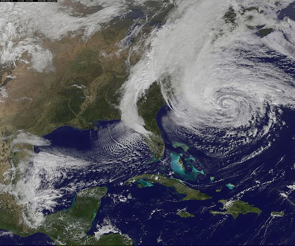
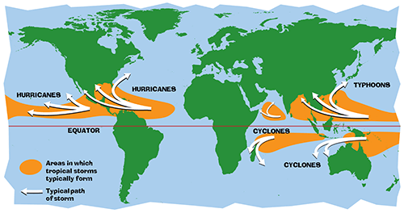
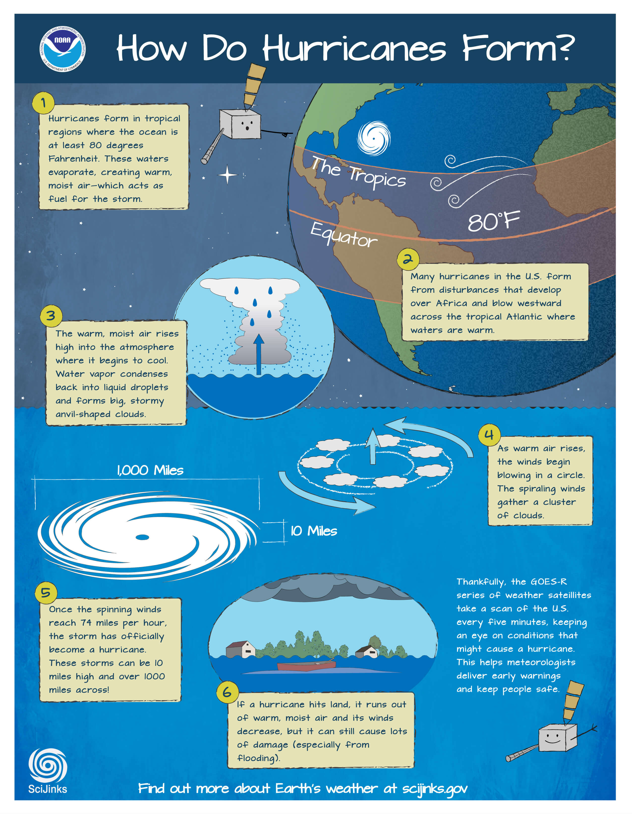

2 Tropical Storms and Hurricanes
“Hurricane Sandy (unofficially referred to as Superstorm Sandy) was the deadliest and most destructive, as well as the strongest, hurricane of the 2012 Atlantic hurricane season. Inflicting nearly $70 billion (2012 USD) in damage, it was the second-costliest hurricane on record in the United States until surpassed by Hurricanes Harvey and Maria in 2017.
Source: https://en.wikipedia.org/wiki/Hurricane_Sandy
2.1 A little bit about Hurricanes
I don’t remember very well when was the first time I got interested in Hurricanes. I did not grow up in hurricane country or anywhere near regions prone to be hit by this kind of storms. However, I do remember learning about clouds, meteorology, and how storms form over mountain ranges. I learned this when I was in my early 20s taking my first steps into the mountaineering world. Experiencing the force and dangers of several storms in the mountains and volcanoes of my homeland, sparked in me a general interest to know more about this type of weather phenomena.
It is said that the word hurricane is derived from the Spanish word huracán which in turn comes from the Taino word hurakán, that was used by the indigenous people of the Caribbean and Central America to designate the “god of wind” or the “evil spirits of the wind”. Nowadays, the word hurricane is informally used to denote low-pressure systems with organized thunderstorm activity that form over tropical or subtropical waters. Among weather experts, though, the term hurricane is reserved for a specific class of tropical systems: those that reach wind speeds of at least 74 mph, and are exclusively formed over the Atlantic Ocean or eastern Pacific Ocean.
Despite my longtime interest in storms and hurricanes, my level of expertise in these subjects is fairly limited. Because of this, I prefer to give you a curated list of some facts about hurricanes that I’ve collected from the following sources:
National Oceanic and Atmospheric Administration (NOAA): https://www.noaa.gov/education/resource-collections/weather-atmosphere/hurricanes
SciJinks: It’s all about weather! https://scijinks.gov/hurricane/
NASA Space Place: How Do Hurricanes Form? https://spaceplace.nasa.gov/hurricanes/en/
2.1.1 Tropical Cyclones
Hurricanes are the most powerful and violent storms on Earth.
They form near the equator over warm ocean waters.
The scientific term for all these storms is tropical cyclone.
A tropical cyclone is a rotating low-pressure weather system that produces strong winds, has organized thunderstorms, and comes with heavy rainfall.
If it hits land, it typically creates storm surge flooding, tornadoes, and rip currents.
People call these storms by other names, such as typhoons or cyclones, depending on where they occur.
Only tropical cyclones that form over the Atlantic Ocean or eastern Pacific Ocean are called “hurricanes.”

2.1.2 Storm Classification
Tropical cyclones are classified by their maximum wind speed:
- Winds less than 39 mph: Tropical depressions
- Winds 39-73 mph: Tropical storms
- Winds 74 mph or greater: Hurricanes
Scientifically speaking, Hurricanes are tropical cyclones whose sustained winds have reached 74 mph.
At this point the hurricane reaches category 1 on the Saffir-Simpson Hurricane Wind Scale.
The Saffir-Simpson Hurricane Wind Scale is a 1 to 5 rating based on a hurricane’s sustained wind speed:
- category 1: 74-95 mph; 64-82 kt; 119-153 km/h
- category 2: 96-110 mph; 83-95 kt; 154-177 km/h
- category 3: 111-129 mph; 96-112 kt; 178-208 km/h
- category 4: 130-156 mph; 113-136 kt; 209-251 km/h
- category 5: 157 mph or higher; 137 kt or higher; 252 km/h or higher
Major hurricanes are defined as Category 3, 4, and 5 storms.
The scale was created by wind engineer Herb Saffir and meteorologist Bob Simpson to help explain damage that buildings will sustain under different wind speeds.
Note that the Saffir-Simpson scale does not include hazards from rain, flooding, or storm surge.
2.1.3 Naming Storms
Once a system escalates to tropical storm-level winds (39 mph or more), it is given a name.
The names are chosen by an international committee of the World Meteorological Organization (WMO).
The list of names is available at: https://www.nhc.noaa.gov/aboutnames.shtml
The Atlantic Ocean hurricane-naming system has been around since 1953.
For the first twenty-five or so years, hurricanes and tropical storms were exclusively given female names.
In 1979, the names began alternating between masculine and feminine.
The names proceed in alphabetical order, omitting the “difficult” letters Q, U, X, Y, and Z.
Names are reused every six years, although the WMO may retire the name of a particularly deadly or costly storm.
In the event that more than 21 named tropical cyclones occur in the Atlantic basin in a season, or more than 24 named tropical cyclones in the eastern North Pacific basin, any additional storms will take names from an alternate list of names approved by the WMO for each basin.
2.1.4 Atlantic Hurricane Season
The official Atlantic hurricane season runs from June through November, but occasionally storms form outside those months.
September is the most active month (where most of the hurricanes occur), followed by August, and October (based on 1851 to 2015 data).
A typical year has 12 named storms, including six hurricanes of which three become major hurricanes (category 3, 4, and 5).
No hurricanes made U.S. landfall before June and after November during the period studied (1851 to 2015 data).
2.1.5 Storm Formation
To close this chapter, take a look at the following diagram that beautifully describes and illustrates the formation of hurricanes.
Source: https://scijinks.gov/hurricane/

If you want to know more about the formation of hurricanes, you can also watch the following video by NOAA SciJinks: